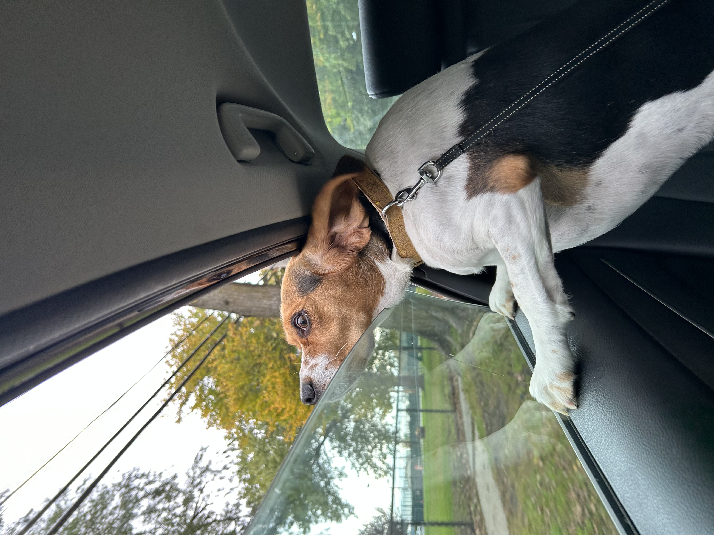

Nastasia Remsha
Core 2: Interaction Studio
assignment #1
What classes have you already taken where you were exposed to HTML/CSS/JS?
I have taken web design 1 class and a web design 2 class at my previous community college. Last semester I took a Core 1: interaction class.
What parts of the class resonated with you?
Each class taught me different things about code. However, the class I took last semester resonated with me the most because it focused more on the creative side of coding rather than structural. I felt very free and motivated to express myself.
What parts were most confusing?
The most confusing parts were the technical ones. For example, organizing files, publishing websites,etc.
How excited about learning code are you? Are you nervous about learning code? If so, why? What can I do in this class to help reduce this anxiety?
I am very excited to learn more code this semester. I am a little bit anxious because my web design professor from my community college was a very harsh grader and would take off a tremendous amount of points for small technical errors. I ended up barely passing his classes. However, last semester I received an A.
How do you imagine coding fitting in with the rest of your design curriculum and career after college?
I plan on becoming a UX designer so code will directly connect to my career. I want to design innovative and easily functional websites that make the experience for the audience not only easy but also enjoyable.
What text editor do you prefer to use?
Dreamweaver
Have you used GitHub before?
Not really
Describe the relationship between HTML, CSS and JavaScript. Try using a unique analogy to describe this relationship. “Bonus points” for creative analogies.
HTML is the foundation of a house, CSS is the interior design, and Javascript is the heating, lighting, water, and electricity.
Using each HTML heading tag, list your favorite foods ranked by importance (remember, there’s 6 levels of heading tags)
Sushi
Pastries
Yogurt Parfait
Russian home food
Steamed Vegetables
Avocado Toast
Create an unordered list and link to some of your favorite graphic design or development related websites. Include a paragraph for each site describing why it is important to you.
I stumbled upon this photographer by accident at the local book store while browsing design books. I was not only intrigued by the work that this artist had created but also the way his work was presented. The book was very consistent and organized. It was true to its style while still not taking away from the actual photography pieces. I later searched him up on the internet and discovered that the website on which his work is digitally presented is very unified with the book. I liked how simple the website was but different in small interactive details. I love the contrasts and the organization.
I come from Russia and due to today's unfortunate events, I find acute interest in the small businesses that are currently thriving in Russia due to the big companies leaving the country in protest. I also am discovering new artists and designers due to this. I am very attracted to brutalist eastern european work. I think that style expresses the harsh conditions of Russia today and how crazy the political system has been driving the citizens. I think this website expresses that really well. It is very strange yet at the same time follows the rules of design making it hard for people to look away. It is intriguing and kept me scrolling for hours.
This is yet another website designed by a russian designer. I think it is very bold and captivating. It is not in my taste; however, the idea behind it is what inspired me. We usually see many websites that are made for brands and businesses. They are driven by money. This is a website that the designer made out of pleasure and for fun. It has no intent behind it into pursuading the viewers to buy something. It is rather created for other people to just enjoy it.
Insert an image that brings you joy to the page. Make sure the image includes alt text that describes the image.

Insert a video embed into the page (for example, a YouTube or Vimeo embed tag of a video of your choosing).
Nest the following series of HTML tags inside each other, where each → represents a new level. Make sure to maintain proper indentation.
main → section → div → p → span
Create an ordered list of the top 5 countries you’d like to visit. Within each country, create another ordered list of the top cities you’d like to visit in that country. Maintain proper indentation and make sure you nest your ordered lists properly.
Write an HTML comment that is hidden from the browser, but displays in the code.
Create an unordered list of at least 6 musical artists you like to listen to. Add a class to each list item that matches the genre of music of that artist.